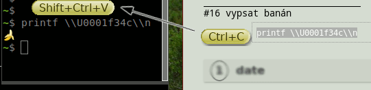
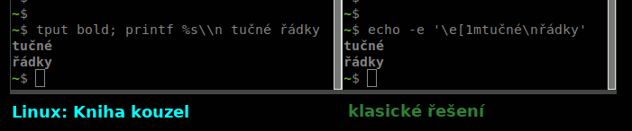

Linux: Kniha kouzel, vanilková příchuť
Linux: Kniha kouzel je česká sbírka velmi krátkých řešených příkladů z prostředí
linuxového operačního systému, ve formě připomínající konverzační slovník cizího jazyka.
Jejím cílem je shromažďovat a sdílet co nejužitečnější přehled možností,
které nabízí uživatelům svobodný software v operačních systémech založených na distribuci
Debian a jádru Linux.
| stav | verze | především pro | poznámky | |
| zastaralá |
2.7
Olga Osová |
Ubuntu 20.04
Focal Fossa |
původně vydána 24. dubna 2021 |
dlouhodobá
pasivní
údržba |
1.15 |
Ubuntu 18.04
Bionic Beaver |
vydána 17. ledna 2021;
větev 1.x bude udržována do 1. března 2023 |
aktuální |
2.8
Pavel Podzimní |
Ubuntu 20.04
Focal Fossa |
vydána 20. června 2021 |
| ve vývoji |
2.9
René Rašínová |
Ubuntu 20.04
Focal Fossa |
vydání očekáváno
v průběhu srpna 2021 |
Projekt vede: Singularis <singularis@volny.cz>
Stojím o zpětnou vazbu. Pište mi, prosím, svoje názory na tento projekt. Můžete začít
třeba na novém diskusním fóru na GitHubu.
Licence projektu: Creative Commons Attribution-ShareAlike 4.0 International
Vanilková příchuť Linuxu: Knihy kouzel je...
- ...okamžitě funkční kód − Ctrl+C, Shift+Ctrl+V, doplnit parametry, Enter a zaklínadlo funguje!

- ...moderní − Využívá vždy nejefektivnější a nejuniverzálnější nástroje dostupné ve verzi Ubuntu, pro kterou je daná verze Linuxu: Knihy kouzel určena, i když jsou málo známé.

- ...ověřená − Zaklínadla ve vydáních označených „vanilková příchuť“
byla testována na virtuálních počítačích, některá i na fyzických.
- ...v souvislostech − Namísto izolovaných řešení, jaká můžete vyhledat internetovým vyhledavačem, nabízí Linux: Kniha kouzel pro každou zpracovanou oblast pestrou paletu možností, jaké by vás nemusely napadnout.
- ...svobodná − Otevřený zdrojový kód na GitHubu s návodem k sestavení
přímo očekává, že si jej upravíte, jak budete chtít. Veškerý software potřebný k sestavení
je svobodný. Projekt na GitHubu je otevřený novým přispěvatelům.
- ...multimediální − Stejný obsah je dostupný jak v PDF podobě
optimalizované pro klasický knihtisk, tak i v elektronických formátech HTML a Markdown.
- ...modulární − Úlohy plněné zaklínadly jsou pokud možno elementární,
abyste je mohl/a efektivně kombinovat.
- ...genderově spravedlivá − Rod slova řádek/řádka se v textech
spravedlivě střídá.
- ...česká − Pracuje s českou lokalizací Ubuntu, upřednostňuje výstižné české termíny
(i ty málo známé), zdrojový kód je v rámci možností v češtině a u jakéhokoliv odkazu
vedoucího na cizojazyčnou stránku je uveden jazyk.
- ...bez záruky − Jako téměř cokoliv v linuxu (a většina online služeb). Linux je velmi konfigurovatelný systém a příkaz, který na mém virtuálním počítači funguje, nemusí stejně fungovat na tom vašem. I mně se občas stává, že mi tentýž příkaz na jednom počítači funguje a na jiném ne.